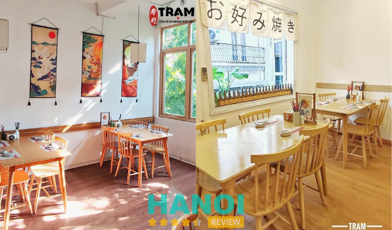
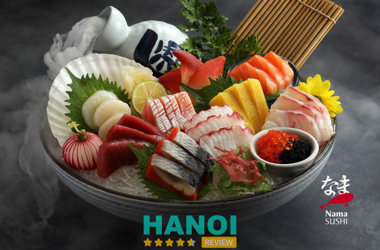
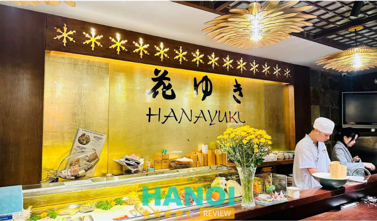
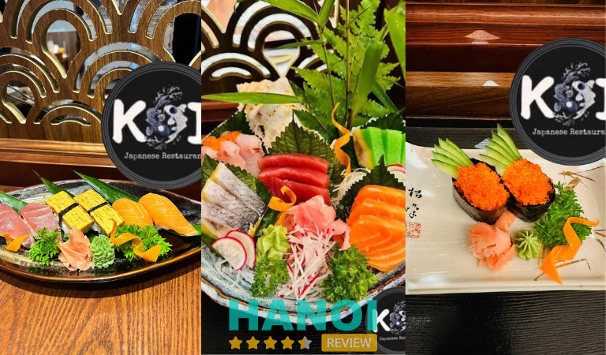
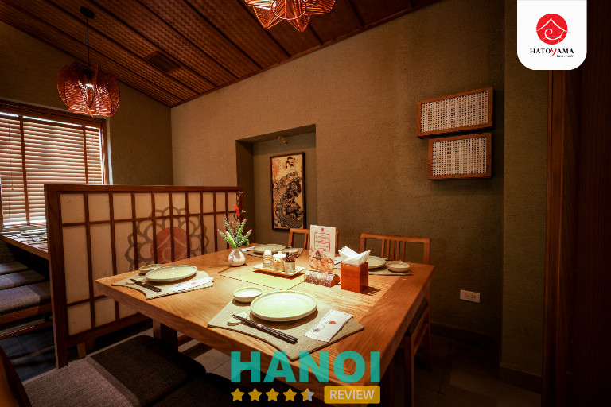
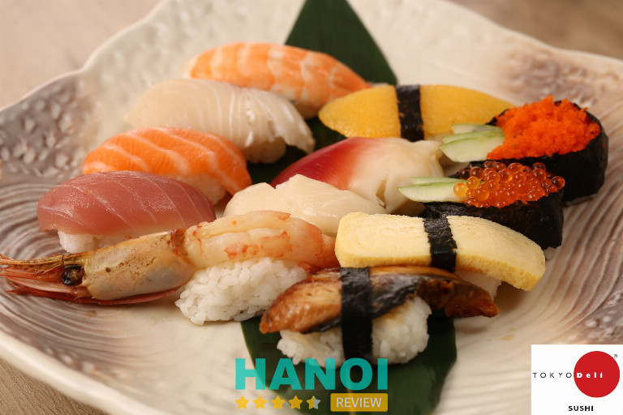
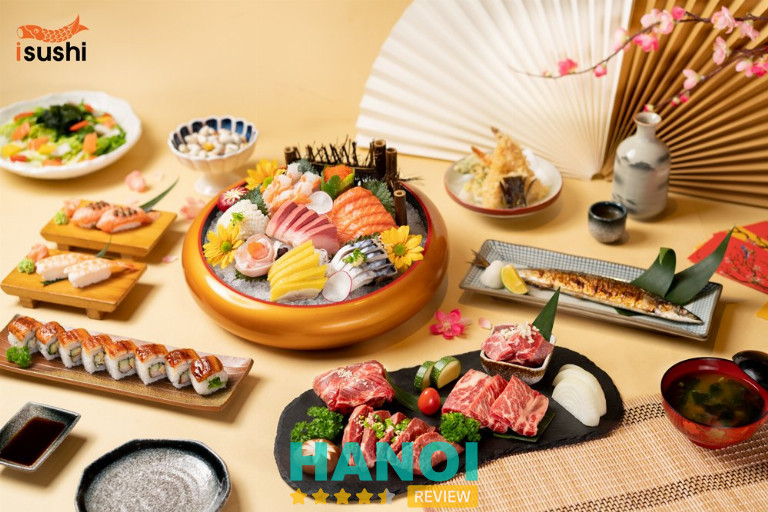
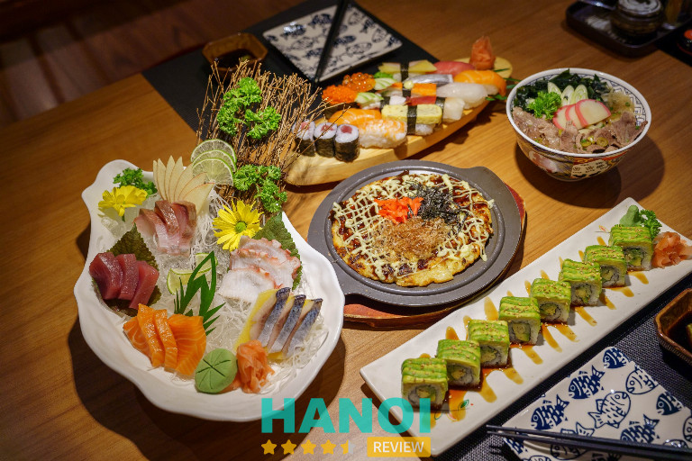
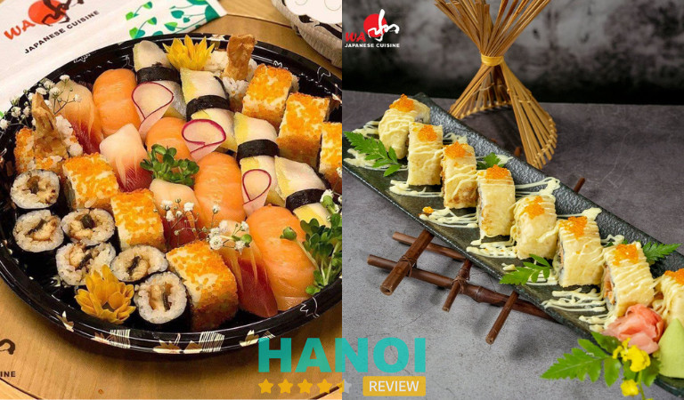
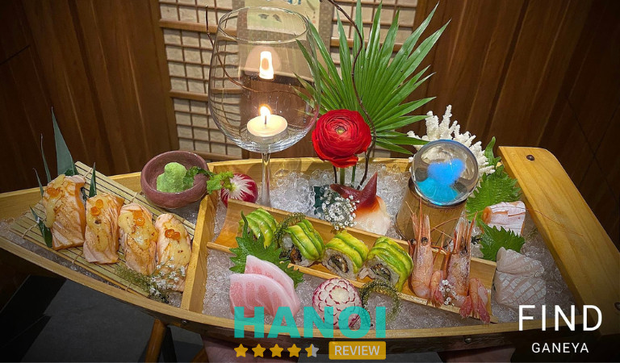

10 Nhà hàng sushi tại Hà Nội ngon, được nhiều tín đồ ưa chuộng
Các nhà hàng sushi tại Hà Nội luôn là địa điểm đến yêu thích của những tín đồ đam mê nền ẩm thực Nhật Bản. Không chỉ quan tâm đến chất lượng đồ ăn, không gian quán và phong cách phục vụ cũng là hai yếu tố được nhiều thực khách chú trọng.
Top 10 nhà hàng sushi tại Hà Nội hút khách nhất
Ngoài sashimi, sushi cũng là một trong những món ăn truyền thống nổi tiếng của người Nhật Bản và được nhiều nước trên thế giới ưa chuộng, trong đó có Việt Nam. Riêng tại thị trường Hà Nội cũng đã có vô vàn quán ăn Nhật bán sushi mọc lên.
Chính vì vậy, hãy cùng theo chân HaNoiReview điểm qua 10 nhà hàng sushi nổi tiếng với đồ ăn ngon, dịch vụ tốt ngay trong bài viết dưới đây.
Trạm Sushi
Nhà hàng Trạm Sushi là cái tên đã không còn quá xa lạ với người dân và học sinh – sinh viên tại Hà Nội. Quán nhận được hàng nghìn lượt đánh giá 5 sao trên khắp các diễn đàn mạng xã hội.
Quán nằm tọa lạc ở ngay trong trung tâm của Hà Nội, có lối thiết kế theo phong cách Nhật Bản tạo nên một không gian ăn uống vô cùng hiện đại và ấm cúng. Tuy nhiên, diện tích của nhà hàng khá nhỏ, chỉ có sức chứa từ 50 khách trở xuống trong cùng một thời gian nên rất thích hợp cho những bữa tiệc nhỏ cùng bạn bè, gia đình. Đặc biệt, nhà hàng còn có phòng VIP (10 người) phù hợp để tổ chức tiệc liên hoan, chúc mừng, sinh nhật,…
Thực đơn của nhà hàng khá phong phú, điển hình như: Sushi, Sashimi, cơm kiểu Nhật, Salad, lẩu,… để thực khách thoải mái lựa chọn tùy theo khẩu vị của mình. Thế mạnh của nhà hàng là các món sushi thơm ngon, bắt mắt. Do đó, khi đến đây bạn có thể cân nhắc và lựa chọn.

Ngoài ra, bạn cũng có thể thử các món ngon khác nổi tiếng ở đây như: Gunkan Lươn Nhật, Gunkan Gà Sốt Teriyaki, Nigiri Lươn Nhật, Nigiri Cá Trích Ép Trứng có giá chỉ từ 10 nghìn đồng/ cái. Bên cạnh đó còn có nhiều loại đồ ăn kèm hấp dẫn như: Canh Miso, bánh khoai Nhật, bánh xèo Nhật, Canh trứng, Salad rau tổng hợp,….
Khi thưởng thức thực đơn ở đây, bạn hoàn toàn có thể yên tâm về chất lượng vệ sinh an toàn thực phẩm. Bởi toàn bộ những nguyên liệu được dùng để chế biến món ăn ở trạm đều được chọn lọc kỹ càng đảm bảo nguồn gốc xuất xứ và các loại gia vị cũng đã qua kiểm duyệt. Cam kết không chỉ mang đến những món ăn ngon miệng, đẹp mắt mà còn đảm bảo sức khỏe cho thực khách.
Không dừng lại ở đó, quán còn được nhiều khách hàng yêu thích nhờ có mức giá vô cùng hợp lý và phải chăng. Bạn có thể order riêng từng món hoặc gọi theo combo giá rẻ từ 200 – 350 nghìn đồng. Nhờ sự yêu mến mà thực khách đã dành cho quán, nhà hàng đang cố gắng để nâng cấp chất lượng món ăn và dịch vụ hơn nữa nhằm giúp khách hàng có cơ hội thưởng thức đa dạng ẩm thực Nhật Bản ngay tại thủ đô.
Thông tin liên hệ:
- Địa chỉ: 90 Trấn Vũ, Quán Thánh, Quận Ba Đình, Hà Nội
- Điện thoại: 033 625 2590
- Email: tramsushitqd@gmail.com
- Website: tramsushi.com
- Fanpage: FB.com/shipsushihanoi
Xem thêm: 10 Quán ăn tại quận Tây Hồ ngon nổi tiếng, nhiều người yêu thích
Nama Sushi
Là một trong số những nhà hàng Nhật ở Hà Nội có chất lượng đồ ăn ngon, giàu giá trị dinh dưỡng và có tính nghệ thuật cao, Nama sushi được nhiều thực khách yêu mến và tìm đến để thưởng thức.
Với không gian quán được thiết kế và bài trí kết hợp giữa hai phong cách Việt – Nhật, tạo nên cảm giác ấm cúng cho mùa đông và mát mẻ khi vào hè. Đồng thời, còn toát lên vẻ sang trọng.
Bên cạnh đó, sashimi và sushi của nhà hàng Nama còn được lòng thực khách bởi sự bắt mắt trong từng món ăn. Đó chính là tâm huyết của người đầu bếp khi trang trí các món ăn thành những tác phẩm nghệ thuật cực kỳ đặc sắc và mãn nhãn. Dù là thưởng thức trực tiếp tại nhà hàng hay mua mang đi, nơi đây hứa hẹn sẽ là địa điểm hoàn hảo ở Hà Thành dành cho những ai say mê sushi của Nhật Bản.

Tại nhà hàng có bán một số món đặc trưng của Nhật Bản như sashimi, sushi, cơm lươn, mì udon,… Trong đó, đối với sushi bạn có thể lựa chọn hàng chục vị khác nhau như sushi cơm cuộn rong biển, sushi trứng, tôm, cá hồi, bạch tuộc,… Đặc biệt, sushi cá hồi là món được nhiều thực khách yêu thích nhất với phần cơm dẻo, đậm đà kết hợp cùng miếng cá hồi tươi ngọn, béo ngậy.
Khi đến đây ăn, bạn có hai hình thức để chọn là gọi theo set hoặc từng món đơn lẻ. Nếu đi nhóm từ 1 đến 4 người thì bạn có thể lựa chọn những phần sushi được mix sẵn để thưởng thức được nhiều hương vị hơn. Nhân viên của quán cũng rất nhiệt tình, do đó bạn hãy nhờ tư vấn để chọn được các món mới ngon và đặc trưng.
Thông tin liên hệ:
- Địa chỉ: 19 Ngõ 30 Mai Anh Tuấn, Quận Đống Đa, Hà Nội
- Điện thoại: 1900 219
- Website: namasushi.vn
- Fanpage: FB.com/namasushivietnam
Hanayuki Japanese Restaurant
Tọa lạc trên đường Đào Tấn thuộc quận Ba Đình (Hà Nội), bạn rất dễ dàng tìm thấy nhà hàng Hanayuki Japanese. Quán có không gian trang trí theo kiểu truyền thống xen lẫn hiện đại, mang đậm phong cách Nhật Bản làm toát lên một bầu không khí vô cùng nhẹ nhàng, gần gũi và ấm cúng.
Ở Hanayuki ngoài những không gian bình thường, nhà hàng còn trang bị 4 phòng VIP riêng mang tên bốn thác nước vô cùng nổi tiếng ở Nhật Bản là Ryuzu, Manai, Yudaki, Kegon. Tất cả các phòng ăn đều được trang trí bằng các họa tiết thể hiện những nét văn hóa truyền thống của Nhật Bản. Đăc biệt, trong mỗi phòng có thiết bị nút ấn để gọi nhân viên phục vụ một cách nhanh chóng khi cần.

Đến với nhà hàng, thực khách sẽ được thưởng thức đa dạng các món ngon chuẩn hương vị Nhật. Trong các món Nhật truyền thống như sashimi, súp Miso, tempura, mì Udon, mì Soba,… thì món sushi luôn được nhiều người ưa chuộng bởi nó dễ ăn.
Ngoài ra, bạn cũng nên thử qua món lẩu cừu có một không hai tại Hanayuki Japanese Restaurant. Với phần nước lẩu thanh và thơm lừng, miếng thịt cừu mềm ngọt đảm bảo sẽ khiến thực khách mê đắm hương vị này ngay từ lần đầu được thưởng thức.
Mặc dù, giá thành các món ở đây khá cao so với mặt bằng chung nhưng quán được mệnh danh là một trong số những nhà hàng Nhật sang chảnh tại Hà Nội có đồ ăn ngon, chất lượng, hình thức bày trí đẹp mắt, dịch vụ chăm sóc khách hàng chu đáo chính là những điểm cộng giúp nâng tầm giá trị cho đơn vị. Đảm bảo những gì bạn bỏ ra xứng đáng với giá trị nhận lại.
Thông tin liên hệ:
- Địa chỉ: 15 Đào Tấn, Cống Vị, Quận Ba Đình, Hà Nội
- Điện thoại: 0903 727 332
- Fanpage: FB.com/HanayukiRestaurant/
Xem thêm: 10 Nhà hàng khu vực Hồ Tây món ăn ngon, không gian rộng thoáng
Koi Japanese Restaurant
Khi nhắc đến danh sách những nhà hàng bán sushi Nhật ngon tuyệt đỉnh ở khu vực thủ đô thì không thể nào bỏ qua cái tên Koi Japanese Restaurant. Điểm làm nên sự khác biệt ở đây đó chính là các nguyên liệu hải sản đều là hàng được nhập từ biển Nhật Bản trong vòng 24h kể từ lấu đánh bắt và một số loài được lấy từ biển Việt Nam. Do đó, đảm bảo sự tươi ngon, cao cấp và hảo hạng.
Đồng thời, các món ăn được đầu bếp ở Koi Japanese Restaurant chế biến không chỉ đáp ứng tiêu chí ngon mà còn có tính thẩm mỹ nghệ thuật riêng. Mỗi một món ăn như là một tác phẩm độc đáo mà người đầu bếp muốn trao gửi đến thực khách.

Khi đến với Koi, bạn đừng nên bỏ lỡ những món sushi cực kỳ nổi tiếng và được nhiều thực khách ưa chuộng như sushi Tura, Sake Abokedo, Sake, Amai Ebi, Honmaguro otoro, Unagi, Tobiko,…
Để tiếp cận được nhiều hơn với khách hàng Việt, quán cũng thường xuyên áp dụng nhiều chương trình ưu đãi, giảm giá để thu hút mọi người đến đây để thưởng thức nền ẩm thực Nhật.
Do đó, nếu bạn muốn trải nghiệm những món sushi ngon do các đầu bếp của nhà hàng chế biến chuẩn vị Nhật thì có thể ghé đến Koi Japanese Restaurant để thưởng thức.
Thông tin liên hệ:
- Địa chỉ: Toà S2.01- 01S12 Vinhomes Ocean Park, Huyện Gia Lâm, Hà Nội
- Điện thoại: 0963 921 692
- Email: koijapaneserestaurant1107@gmail.com
- Fanpage: FB.com/KoiJapaneseRestaurant
Nhà hàng Nhật Bản Hatoyama
Hatoyama được nhiều người biết đến là một trong những nhà hàng Nhật đẹp nhất Hà Thành. Đầu bếp ở đây đã có hơn 20 năm kinh nghiệm trong việc khám phá và học đạo các món ăn đặc nổi tiếng nhất nhất tại xứ sở hoa Anh đào. Do đó, nhà hàng được mở ra với mục đích trở thành cầu nối giúp thực khách Việt có thể thưởng thức được nền tinh hoa ẩm thực Nhật.
Các hải sản được nhà hàng dùng để chế biến món ăn đều được nhập trực tiếp từ chợ hải sản Tsukiji (làng chợ cá lớn nhất thế giới) và từ biển Hokkaido. Bên cạnh đó, còn có một số loại hải sản chất lượng cao thuộc vùng biển Việt Nam. Tất cả đều được tiêu thụ trong vòng 24 giờ đầu tiên kể từ sau khi đánh bắt nên đảm bảo vẫn giữ được độ tươi ngon và giá trị dinh dưỡng.

Ngoài chất lượng món ăn, Hatoyama còn đặc biệt chú trọng đến chất lượng dịch vụ. Nhà hàng lấy sự hài lòng của thực khách để làm tôn chỉ hoạt động của quán. Do vậy, đội ngũ nhân viên đều được đào tạo chuyên nghiệp, tinh thần làm việc trách nhiệm cao và có sự am hiểu sâu rộng về ẩm thực lẫn văn hóa Nhật – Việt. Đảm bảo bạn sẽ được tư vấn đúng với nhu cầu bạn đang mong muốn, không lôi kéo và lừa dối khách hàng.
Không chỉ có những món đặc trưng truyền thống khác, bạn có thể thử thưởng thức một số loại sushi ngon làm nên tên tuổi của nhà hàng như Sushi bụng cá ngừ Nhật, sushi lươn Nhật, sushi cá hồi, sushi cá cam đuôi vàng, sushi tôm, sushi cá hồi phủ sốt trứng cá tuyết, sushi ngao đỏ, sushi cá hồng lửa nướng tái, sushi cá kinki nướng tái,…
Tùy từng món sushi và hải sản được sử dụng mà giá thành sẽ có sự chênh lệch khác nhau. Nhìn chung, giá sushi ở Hatoyama dao động từ 70 đến 450 nghìn đồng.
Thêm vào đó, nhà hàng được thiết kế với từng khu vực bàn ăn ngăn cách nhau để đảm bảo tối đa không gian riêng tư cho thực khách. Chính vì thế, nơi đây rất thích hợp để cùng gia đình hoặc bạn bè thân thiết ăn uống và trò chuyện.
Thông tin liên hệ:
- Địa chỉ: 8 Vạn Phúc, Liễu Giai, Quận Ba Đình, Hà Nội
- Điện thoại: 1900 636 061
- Website: hatoyama.vn
- Fanpage: FB.com/Hatoyama.vn
Xem thêm: 10 Quán lẩu tại Hà Nội giá rẻ, ngon bất bại cho giới sành ăn
Tokyo Deli
Tokyo Deli là thương hiệu nhà hàng Nhật lớn sở hữu chuỗi hệ thống gồm 15 chi nhánh cửa hàng ở Hà Nội và thành phố Hồ Chí Minh. Nhà hàng chứa đừng nền ẩm thực Nhật Bản độc đáo có thể đáp ứng mọi tiêu chuẩn của thực khách. Các món ăn ở đây đều có sự kết hợp hài hòa giữa ẩm thực và nghệ thuật, chính nhờ nét đặc sắc này đã khiến cho các món ăn ở nhà hàng trở nên nổi tiếng hơn bao giờ hết.
Với quy trình quản lý nguyên liệu theo phương pháp tiên tiến, đảm bảo tiêu chuẩn vệ sinh an toàn thực phẩm xuyên suốt từ khâu nhập hàng đầu vào đến cách chế biến. Từng món ăn được chế biến dưới những đôi bàn tay tài hoa các đầu bếp chuyên nghiệp tại Tokyo Deli đều như một tác phẩm nghệ thuật đa sắc màu. Qua đó góp phần tạo nên những món ăn vừa bắt mắt vừa ngon miệng.

Nhà hàng có menu vô cùng phong phú với hơn 200 món ăn khác nhau được nghiên cứu công thức và chế biến sao cho phù hợp với khẩu vị người Việt nhất. Đảm bảo dù là người sành ăn hay khó tính thì nhà hàng cũng sẽ khiến thực khách hài lòng với những món ăn Nhật mà quán chế biến.
Nếu bạn là người lần đầu tiên đến đây và muốn trải nghiệm ẩm thực Nhật thì một gợi ý hoàn hảo mà bạn có thể lựa chọn đó là các món sushi và sashimi. Trong đó, sushi ở nhà hàng được bán theo set gồm nhiều loại, rất thích hợp để bạn ăn thử. Đặc biệt, giá của từng set chỉ từ 150 – 350 nghìn đồng, tùy vào số lượng người.
Thông tin liên hệ:
- Địa chỉ: 458 Minh Khai, KĐT Times City, Quận Hai Bà Trưng, Hà Nội
- Điện thoại: 0243 200 5757
- Email: info@tokyodeli.com.vn
- Website: tokyodeli.com.vn
- Fanpage: FB.com/TokyoDeliHaNoi
Isushi
Một nhà hàng Nhật khác được đông đảo thực khách ở Hà Nội ưa chuộng đó chính là Isushi. Ấn tượng đầu tiên khi đến với nhà hàng Isushi của nhiều thực khách đó là ở lối kiến trúc phong cách Nhật Bản mang đậm dấu ấn riêng.
Không gian nhà hàng được thiết kế theo kiểu truyền thống với tone màu sáng chủ đạo. Nội thất được sử dụng chủ yếu bằng chất liệu gỗ. Mỗi khu vực đều được phân chia bởi cách vách ngăn tạo không gian thoải mái nhất cho khách hàng. Đặc biệt, nhà hàng có quầy bếp mở giúp khách hàng vừa có thể tận hưởng mĩ vị, vừa được chiêm ngưỡng kĩ năng nấu nướng điêu luyện của người đầu bếp.

Thêm vào đó, nhà hàng sở hữu hơn 100 món trong thực đơn hứa hẹn sẽ mang đến cho bạn những trải nghiệm tuyệt vời nhất khi thưởng thức ẩm thực chuẩn vị Nhật. Hơn nữa, quán có hơn 57 loại sushi khác nhau chắc chắn sẽ là điểm đến lý tưởng dành cho những tín đồ yêu thích món này.
Một điểm cộng lớn dành cho Isushi đó là các món ăn đều được chế biến từ những loại hải sản thượng hạng, đã qua kiểm định và chọn lựa kỹ càng sẽ giúp bạn cảm nhận được vị tươi ngon quy tụ tinh hoa của biển cả.
Thêm vào đó, đội ngũ nhân viên ở nhà hàng vô cùng thân thiên, nhiệt tình và chu đáo. Cam kết phục vụ khách hàng chuẩn phong cách người Nhật, đảm bảo bạn sẽ hài lòng hơn cả mong đợi.
Thông tin liên hệ:
- Địa chỉ: 16 Nguyễn Chí Thanh, Ngọc Khánh, Quận Ba Đình, Hà Nội
- Điện thoại: 1900 6622
- Email: hn.support@ggg.com.vn
- Website: isushi.com.vn
- Fanpage: FB.com/isushi.BuffetNhatBan
Xem thêm: 10 Tiệm bánh sinh nhật tại Hà Nội ngon, thiết kế đẹp, giá tốt
Sushi Kei
Sushi Kei cũng là một trong những địa điểm yêu thích của người dân Hà Nội khi muốn thưởng thức món Nhật. Giống như cái tên của mình, nhà hàng được mở ra với mong muốn mang lại những trải nghiệm đầy sự hạnh phúc và vui vẻ cho thực khách khi ăn các món Nhật Bản ở đây.
Nhà hàng hiện đang phục vụ thực khách với thực đơn gần 200 món Nhật độc đáo và đẹp mắt. Trong đó, phải kể đến các món như Temaki cuộn cá hồi, Agemono hải sản chiên, salad rong biển, Yaki cá ngừ nướng sốt,… Điểm đặc biệt trong menu của quán đó chính là các món ăn đều được đầu bếp trang trí một cách cầu kì và tỉ mỉ, thể hiện đỉnh cao tinh hoa trong văn hóa ẩm thực của Nhật Bản đến với khách hàng.

Khi đến với Sushi Kei, bạn không nên bỏ qua một số loại sushi được nhiều thực khách order như sushi tôm ngọt Nhật, sushi thanh cua cải mầm, sushi bạch tuộc, sushi mực và ngoài ra còn có sushi thập cẩm đặc biệt. Từng loại Sushi đều có sự hòa quyện đặc biệt giữa vị bùi béo của cơm, vị chua của giấm, vị ngọt từ các loại hải sản và vị cay nồng của mù tạt mang đến những trải nghiệm vô cùng thú vị.
Thêm vào đó, không gian quán của Kei Sushi cũng là một trong những yếu tố ghi điểm trong lòng khách hàng. Bởi quán sỡ hữu quy mô cửa hàng rộng rãi, không gian được thiết kế kết hợp hai phong cách truyền thống và hại đại của Nhật Bản. Đồng thời trang bị đầy đủ nội thất và thiết bị công nghệ tiên tiến của nhất để đảm bảo khách hàng cảm thấy thoải mái nhất khi thưởng thức món ăn.
Thông tin liên hệ:
- Địa chỉ: Tầng 3, TTTM Aeon Mall Long Biên, Quận Long Biên, Hà Nội
- Điện thoại: 1900 234 546
- Email: marketing.hn@goldsunfood.vn
- Website: sushikei.vn
- Fanpage: FB.com/SushiKei.VN
Wa Japanese Cuisine
Wa Japanese Cuisine có không gian rộng rãi, thoáng mát và sạch sẽ, cùng với đó là phong cách thiết kế mang lại một cảm giác ấm cúng, gần gũi. Đây sẽ là nơi lý tưởng để gia đình cùng nhau đón tiệc sinh nhật, công ty liên hoan và bạn bè họp mặt. Với cấu tạo gồm 3 tầng lầu, trong đó có 2 phòng theo phong cách hiện đại và 3 phòng được thiết kế theo kiểu Nhật Bản. Đảm bảo đáp ứng mọi nhu cầu của thực khách.
Đội ngũ nhân viên của nhà hàng cũng rất chuyên nghiệp và hiếu khách. Do đó, khi bạn ghé đến đây sẽ được nhân viên nhiệt tình đón tiếp và tư vấn để bạn lựa chọn được những món ăn phù hợp với khẩu vị của mình. Thực đơn của nhà hàng rất phong phú và đa dạng, có ba món nổi bật ở nhà hàng được thực khách đánh giá cao nhất gồm sashimi, sushi và lẩu giấy.

Ngoài ra, nhà hàng Wa Japanese Cuisine còn có rất nhiều món ăn khác nhau như súp, salad, súp, tempura, teppan yaki, cơm donburi, mì udon,… để thực khách có thể lựa chọn tùy theo sở thích của mình.
Do đó, nếu bạn và cả gia đình hoặc bạn bè muốn thưởng thức nền ẩm thực Nhật Bản chuẩn vị, có không gian quán đẹp và đặc trưng theo phong cách Nhật ở ngay giữa lòng thủ đô thì hãy cân nhắc và ghé đến với Wa Japanese Cuisine.
Thông tin liên hệ:
- Địa chỉ: 34G Trần Phú, Điện Biên, Quận Ba Đình, Hà Nội
- Điện thoại: 0962 413 663
- Email: info@wa-cuisine.com
- Fanpage: FB.com/WaJapaneseCuisine
Xem thêm: 5 Quán phở bò tại Hà Nội thơm ngon, đặc trưng hương vị miền Bắc
Ganeya Japanese Restaurant
Nếu các tín đồ ưa chuộng món Nhật nhưng vẫn chưa tìm nhà hàng sushi ưng ý, chuẩn vị, giá cả hợp lý ở khu vực Hà Nội thì Ganeya Japanese Restaurant chính là gợi ý cuối cùng mà bài viết mới giới thiệu đến bạn. Nơi đây là nhà hàng chuyên bán các món đặc trưng truyền thống của Nhật đến từ từ vùng Fukuoka nổi tiếng.
Từ không gian bày trí của nhà hàng, quy cách chế biến món ăn và phong cách phục vụ đều mang đến cho thực khách một cảm giác như đang thưởng thức ẩm thực ngay tại Nhật Bản.

Mặc dù không quá cầu kỳ trong khâu chế biến nhưng các món sushi ở Ganeya Japanese Restaurant đều luôn có những điểm nhấn hoàn hảo riêng đảm bảo những ai đã ăn một lần đều sẽ nhớ mãi. Những nguồn thực phẩm dùng để chế biến thành sushi đều được nhà hàng lựa chọn kỹ càng và nhập đồ tươi mới mỗi ngày.
Điển hình như thịt bò Wagyu hạng A5 tiêu chuẩn cao cấp nhất trong bảng thang đo từ A1 đến A5, đảm bảo chất lượng hảo hạng,… Bên cạnh đó, nhà hàng Ganeya cũng thường xuyên nhập cá theo mùa để đảm bảo độ tươi ngon nhất để thực khách thưởng thức.
Dưới sự hỗ trợ của các đầu bếp có tay nghề nấu nướng giỏi, đã có hơn 40 năm kinh nghiệm trong lĩnh vực tạo ra các món Nhật đảm bảo sẽ đem đến cho bạn những món ăn bổ dưỡng, thơm ngon, chuẩn vị Nhật Bản nhất. Các món ăn ở đây có nhiều phân khúc giá khác nhau từ bình dân đến cao cấp. Chính vì vậy, bạn có thể cân nhắc và lựa chọn món ăn phù hợp vời điều kiện tài chính của mình.
Thông tin liên hệ:
- Địa chỉ: 41 Trần Quốc Toản, Trần Hưng Đạo, Quận Hoàn Kiến, Hà Nội
- Điện thoại: 0329 909 698
- Email: ganeyahanoi@gmail.com
- Fanpage: FB.com/Ganeya41tranquoctoan
6 lưu ý để chọn nhà hàng sushi chất lượng, đồ ăn ngon
Hiện nay, có rất nhiều nhà hàng Nhật trên địa bàn Hà Nội. Tuy nhiên, để chọn được một nhà hàng bán sushi chuẩn vị thì không phải là điều dễ dàng. Thế nên, bạn hãy áp dụng một số tiêu chí sau để có thể lựa chọn được nhà hàng ngon, ưng ý nhất.
- Nhà hàng uy tín: Các nhà hàng nổi tiếng, có tuổi đời lâu năm và thu hút lượng khách ổn định tại khu vực thường sẽ mang đến những dịch vụ tốt, món ăn ngon phù hợp với nhiều khẩu vị của thực khách.
- Không gian quán: Bạn có thể ưu tiên những quán có phong cách Nhật Bản để vừa trải nghiệm ẩm thực và checkin sống ảo. Tuy nhiên, hãy chú ý lựa những nhà hàng có không gian rộng rãi, diện tích vừa phải, không quá chật hẹp, đặc biệt là sạch sẽ để tăng cảm hứng thưởng thức món ăn hơn.
- Thực đơn đa dạng: Nếu đi với nhiều người, bạn nên chọn quán có thế mạnh về sushi nhưng cũng có bán nhiều món Nhật Bản khác để phù hợp với khẩu vị ăn uống của mỗi người.
- Nguyên liệu đảm bảo: Các món sushi và sashimi đều có nguyên liệu sống. Do đó bạn cần tìm hiểu trước những đánh giá về độ tươi ngon của đồ ăn từ những khách hàng đã từng trải nghiệm. Đồng thời, hãy chọn những nhà hàng có công khai về nguồn nguyên liệu được nhập trực tiếp từ Nhật Bản hoặc có chứng nhận thực phẩm rõ ràng để đảm bảo an toàn sức khỏe.
- Đầu bếp có tay nghề giỏi: Để tạo ra những món ăn ngon và hấp dẫn đòi hỏi phải có đầu bếp giỏi, chuyên nghiệp, có nhiều năm kinh nghiệm chế biến món Nhật. Ngoài ra, các món ăn cùng cần phải được bày trí đẹp, cầu kì theo chuẩn phong cách Nhật.
- Chất lượng phục vụ: Đội ngũ nhân viên chu đáo, phục vụ nhanh chóng, nhiệt tình cùng sẽ là một điểm cộng lớn đối với nhà hàng. Đặc biệt, sự hiếu cũng là nét đẹp văn hóa của người Nhật. Chính vì vậy, một nhà hàng thể hiện được những nét đẹp văn hóa ấy sẽ càng gây ấn tượng tốt với thực khách.
Bài viết này là danh sách 10 nhà hàng sushi Nhật tại Hà Nội được nhiều thực khách đánh giá tốt mà bài viết đã tổng hợp và giới thiệu đến bạn. Hy vọng những thông tin trên có thể giúp bạn tìm được một nhà hàng ưng ý.
Có thể bạn quan tâm
- 10 Quán bún ốc tại Hà Nội đông khách, thơm ngon nức tiếng
- 10 Quán ăn Hàn Quốc tại Hà Nội hot nhất, khách đông nườm nượp
- 5 Địa chỉ mua ô mai tại Hà Nội ngon, chuẩn, truyền thống lâu đời
- 5 Shop bán mỹ phẩm Nhật Bản tại Hà Nội uy tín, chính hãng
DOANH NGHIỆP: Đăng tải thông tin MIỄN PHÍ.
Tin đọc nhiều


7 Quán bánh gà ở Hà Nội ngon miệng, ăn là ghiền
Bánh gà Hà Nội từ lâu đã trở thành món ăn yêu thích của nhiều người, với lớp vỏ giòn rụm, thịt gà tươi mềm...

7 Quán bar ở Hai Bà Trưng nổi tiếng, phục vụ tận tình
Nếu bạn đang tìm những quán bar ở Hai Bà Trưng có không gian đẹp, phục vụ tận tình và đồ uống chất lượng, đây...
10 Quán ăn tại quận Đống Đa nổi tiếng thơm ngon, phục vụ tốt
Để giúp du khách trong và ngoài nước trải nghiệm nền ẩm thực độc đáo, các Quán ăn tại quận Đống Đa luôn có những...

5 Quán bún riêu tại Hà Nội thơm ngon đậm đà, lưu ngay để thử
Đối với những tín đồ đam mê ẩm thực chắc chắn sẽ không thể nào bỏ qua các Quán bún riêu tại Hà Nội thơm...

Trở thành người đầu tiên bình luận cho bài viết này!